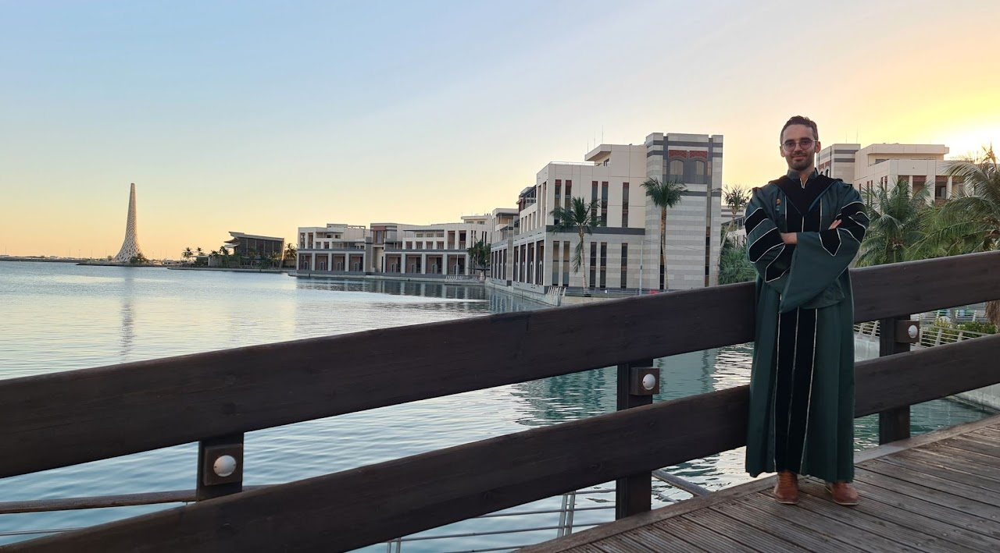

My Academic Journey

2010
2010 was a challenging year. My dedication to academics made me a target for a group of neighborhood bullies who disdained my intellectual pursuits. As I navigated the aisles of the supermarket, their taunts echoed in my ears, fueling my fear and insecurity. However, beneath the surface, a flame of defiance flickered. I refused to let their negativity deter me from my path.
2011
2011: A prestigious scholarship for my bachelor's degree arrived like a beacon, recognizing my academic dedication while presenting a new challenge: sustaining the top grades that kept this lifeline afloat. Initially, a mandatory semester of refreshing English courses added unexpected turbulence to my planned timeline, causing temporary frustration. Yet, this year also marked a pivotal point, a transformative migration from the serene Bekaa Valley to the bustling, vibrant energy of Beirut.
2012
2012: This year brought both honor and growth. Honored to be one of 65 diverse top students from across Lebanon, I joined a professional leadership program. Collaborating with a talented team on a pilot social entrepreneurship project not only sharpened my leadership skills but also ignited a passion for the power of collective action to create positive change.
2013
2013: Fueled by the earlier detour with English courses, I embraced a new challenge: a minor in computer science. I found joy in its complexity, and it allowed me to reclaim the lost time. The full load of six courses per semester was demanding, but my thirst for knowledge kept me fueled.
2014
2014: Master's programs both within and outside Lebanon beckoned. While rejection from several universities, including a tempting offer in the UK due to financial constraints, left stings, one acceptance shone brighter than all: a Master's scholarship to AUB. My academic journey, forged in resilience and a hunger for knowledge, had found its next exciting chapter.
2015
2015: My Master's journey at AUB didn't begin as smoothly as I'd hoped. My English exam score fell short of the requirement, necessitating an additional course with a hefty $7,000 price tag. While this presented a financial hurdle, the dream of joining AUB's vibrant community and exploring its iconic campus with its 100-year-old trees remained undimmed. To bridge the financial gap and keep my dream alive, I enrolled in a teaching diploma program at the Lebanese International University. Combining studies for the AUB entrance exam with this new commitment required grit and discipline, but the prospect of realizing my academic aspirations fueled my determination.
2016
2016: With the AUB scholarship, I dove headfirst into my master's courses, my resolve burning bright. The scholarship didn't stretch to daily costs, though. My weekdays became a juggling act: balancing duties as a municipal assistant, private tutoring, and squeezing in my precious Master's days. Each role echoed the others, enriching my knowledge with real-world experience. It was grueling, but the dream of conquering my academic peak fueled every step. My master's program was a thrilling dive into the world of computational science. Courses challenged me like never before, spanning diverse fields like electrical and management engineering, epidemiology, math, and computer science. It was a demanding blend, but incredibly rewarding as I built a strong foundation across disciplines.
2017
2017: Stepping into the world of teaching, I explored the double life of bustling classrooms and crafting accessible online materials. It was a year of firsts, sparking curiosity in young minds, patiently building my thesis, and taking the first steps towards applying to PhD.
2018
2018: Embarking on a PhD in Statistics felt like venturing into uncharted territory. It was a whole new foundation, a fresh set of struggles and exhilarating discoveries. My dedication paid off, but not without hurdles.
2019
2019: One qualifying exam didn't meet the mark, presenting a potential roadblock. Yet, my determination wouldn't be swayed. I doubled down, spending the next year and a half solidifying my knowledge and overcoming every obstacle.
2020-2023
2020–2023: Phasing into my research was exhilarating. I delved into my chosen field, authoring four papers, sharing my knowledge as a teaching assistant across four courses, and presenting my work at prestigious conferences. My best presentation at the KAUST-NVIDIA workshop and the ISBA22 poster award in Bayesian Computation were badges of honor, fueling my passion for exploration and discovery. Culminating in this journey was the immense honor of receiving the 2023 Al Kindi Research Award from the stat department. This recognition for my innovative work is a testament to my unwavering commitment and a beacon guiding me towards further frontiers.
Today
Today, I am a researcher at the Extreme Computing Research Center, where the Middle East's supercomputing titan exists — a far cry from the taunts of childhood bullies who tried to dim my academic light. Back then, failures felt like detours, not dead ends. A stumble with English wasn't a derailment, but a detour that led me to the world of computer science. Each misstep, each closed door, opened a new path, richer and more diverse than before. A Master's in computational science bloomed from those detours, followed by my achievement as the first person to take a PhD in Statistics in my town. Sure, there were late nights, mountains of research, and moments of self-doubt. But through it all, one flame never flickered: a burning passion to learn, to explore, to push the boundaries of what's possible.
So chase your dreams, young minds, and remember, even the most powerful supercomputer started with a single spark.